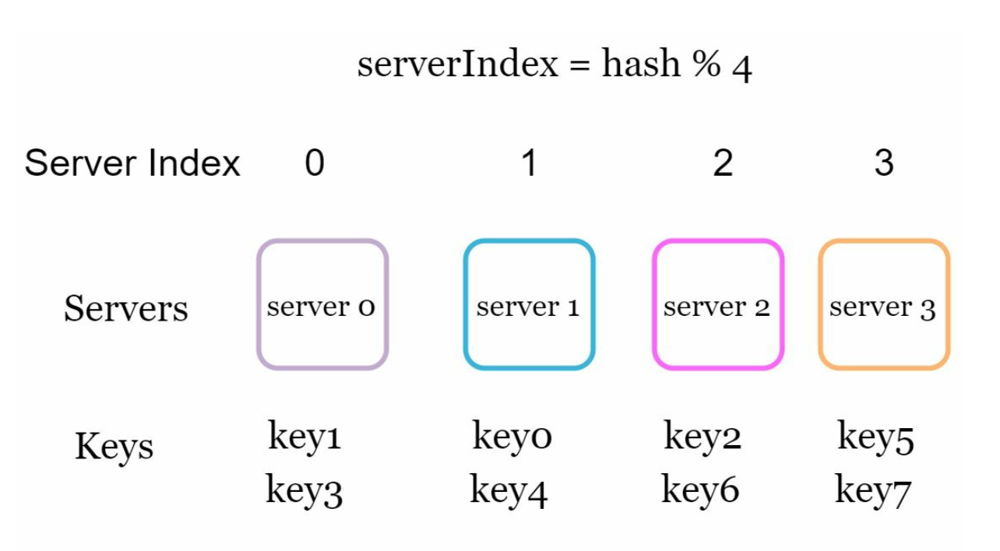
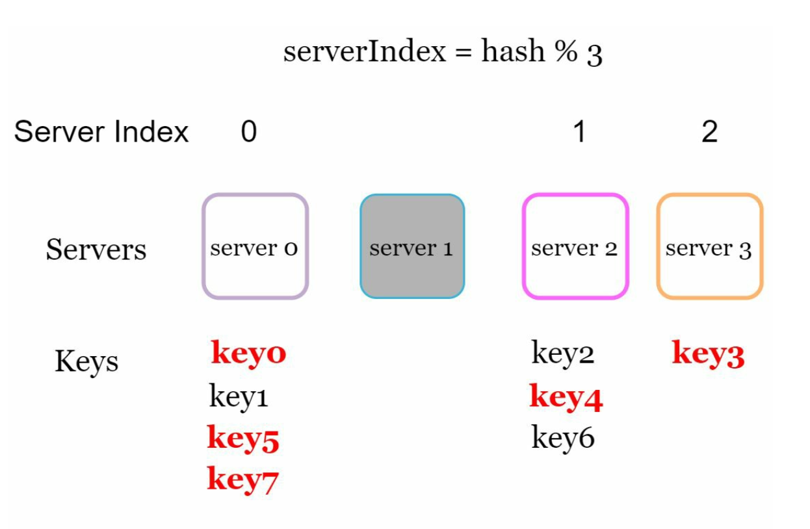
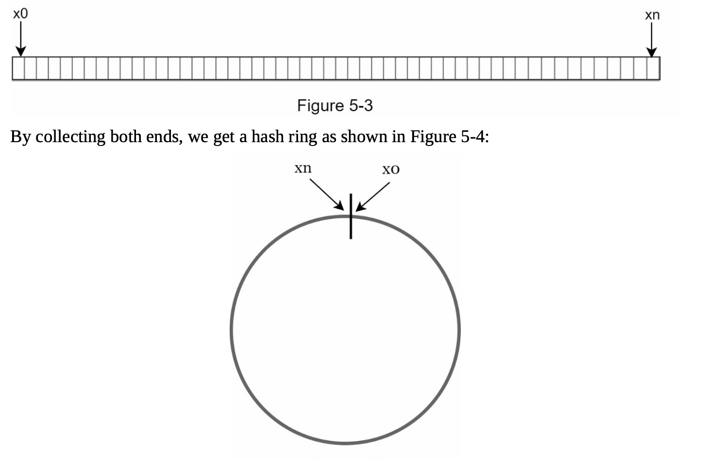
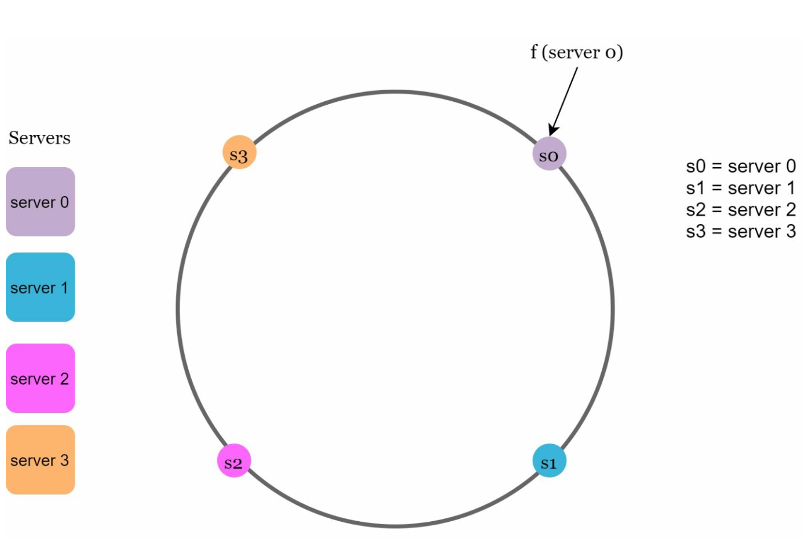
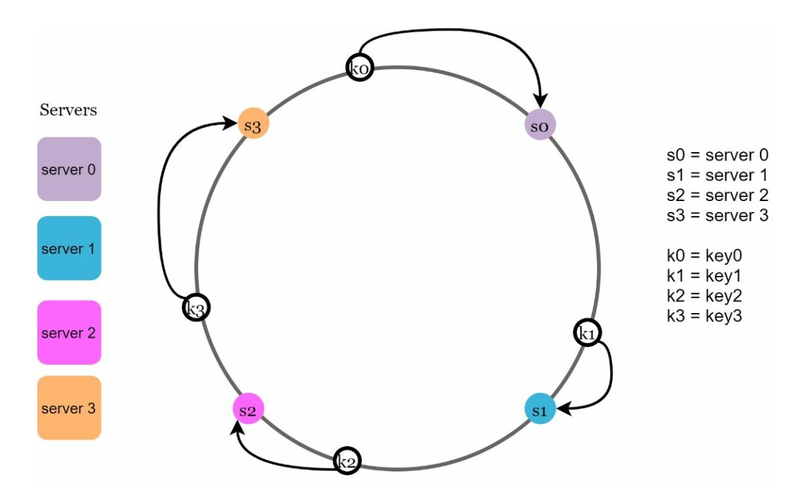
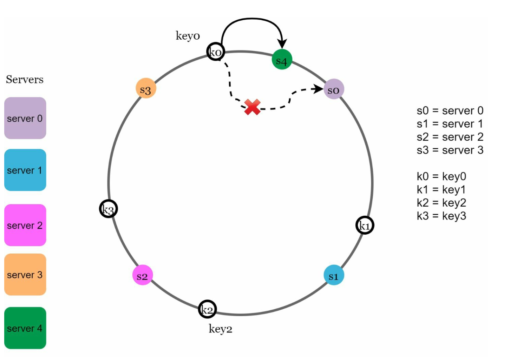
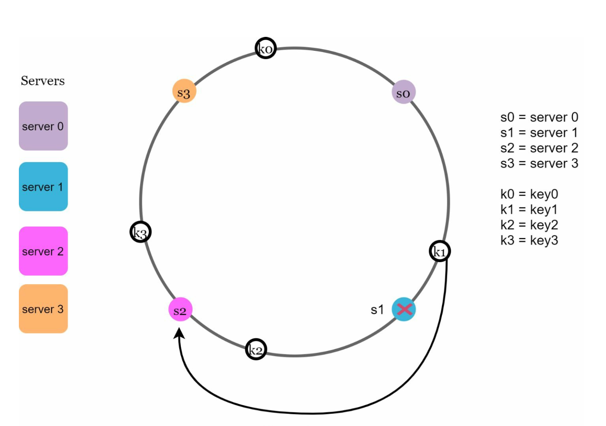
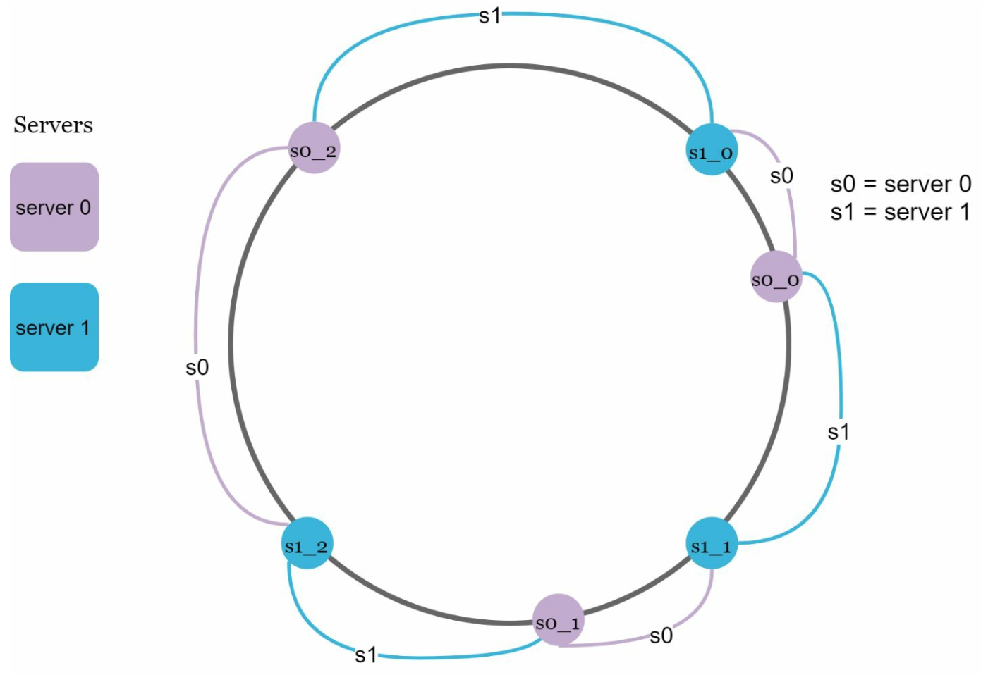
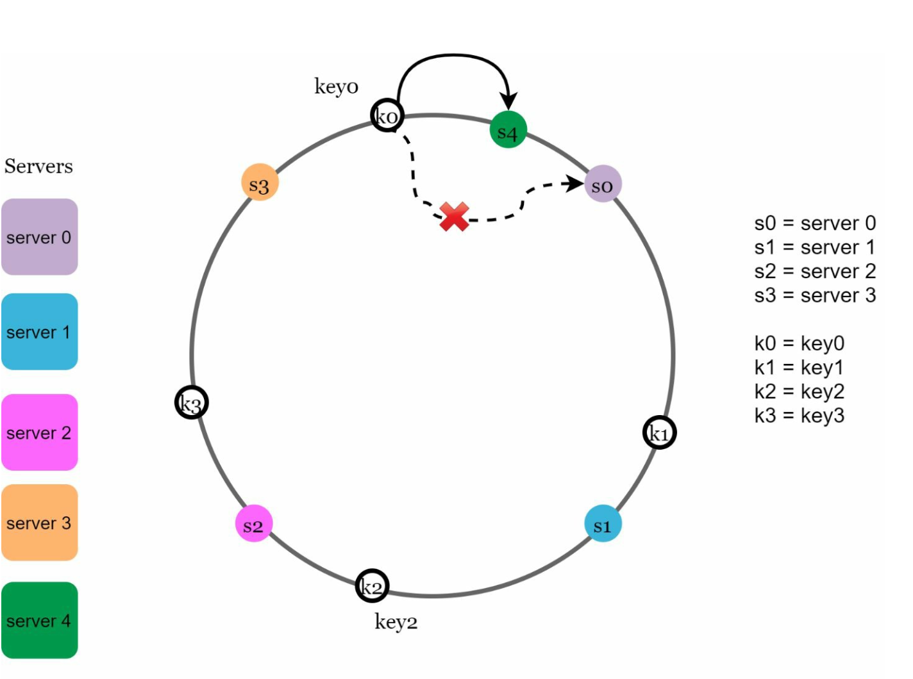
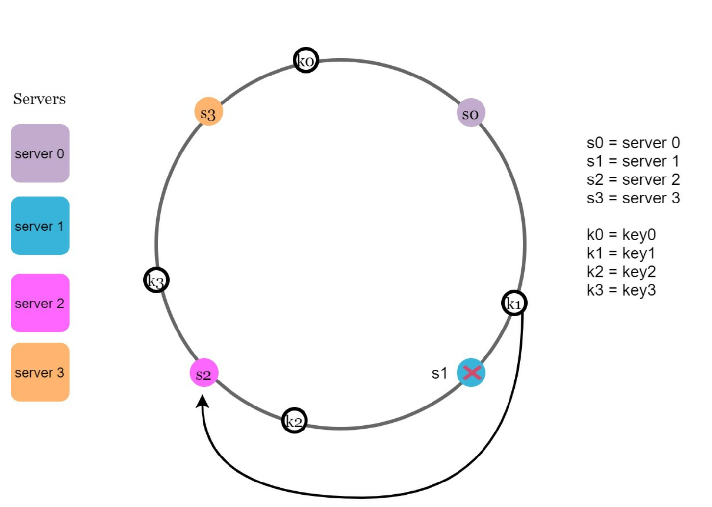

第 5 章：设计一致性哈希
原章节：Design Consistent Hashing · 原项目路径
05. Consistent Hashing/
本章导读
你的缓存集群有 3 台机器，跑得好好的。业务涨了，你按计划加了一台，变成 4 台。
然后监控告警炸了：数据库的 QPS 瞬间涨了 4 倍，缓存命中率从 95% 掉到 25%。
你没有改任何代码，只是加了一台机器，为什么反而把系统打垮了？
原因藏在一个看起来人畜无害的公式里：serverIndex = hash(key) % N。当 N 从 3 变成 4 时，几乎所有的 key 都被映射到了不同的服务器上——原来缓存的数据全都在"错误的"机器上，等于全部失效。
这一章讲的「一致性哈希（Consistent Hashing）」就是解决这个问题的技术。它被用在 Cassandra、DynamoDB、Discord、CDN、负载均衡器里，是分布式系统最基础的工具之一。
学完这一章，你应该能回答：为什么取模哈希在扩容时会失效？哈希环是怎么工作的？虚拟节点为什么必要、该设多少个？一致性哈希在"负载均衡"和"数据分区"两种场景下有什么本质区别？
你将学到
- 取模哈希（
hash % N）在节点增减时的灾难性后果，以及精确的失效比例 - 哈希环的构造方式，以及"顺时针找第一个节点"这条规则的完整含义
- 添加/移除服务器时，受影响 key 区间的严格推导（本章会逐字验算原笔记的结论）
- 基本哈希环的两个缺陷，以及虚拟节点如何量化地解决它们
- 为什么"顺时针"只是一个约定，以及虚拟节点数量的经验值
- 一致性哈希在负载均衡与数据分区两种用途下的差异
- 节点少时数据分布不均的量化表现，以及替代方案（Rendezvous、Jump、Maglev）
1. 从一个真实故障开始：加了一台服务器，缓存全失效了
我们先不讲方案，先看清楚问题。
假设你有 3 台缓存服务器（s0、s1、s2），用一个哈希函数把每个 key 映射到某台服务器上。最朴素的做法是：
serverIndex = hash(key) % 3
hash("user:1001") % 3 = 1→ 存到 s1hash("user:1002") % 3 = 0→ 存到 s0hash("user:1003") % 3 = 2→ 存到 s2
一切正常。

现在加一台服务器 s3，服务器数量变成 4，公式变成 hash(key) % 4。
同样的 key，算出来的结果全变了：
| key | hash % 3（旧） |
hash % 4（新） |
结果 |
|---|---|---|---|
user:1001 |
1 | 1 | 命中 |
user:1002 |
0 | 2 | 失效 |
user:1003 |
2 | 3 | 失效 |
user:1004 |
1 | 0 | 失效 |
user:1005 |
0 | 1 | 失效 |

这不是巧合，而是数学必然。 一个 key 在扩容后仍然命中原来的服务器，需要 hash % 3 == hash % 4 同时成立——这个概率只有约 1/4。
严格地说，当服务器数从 N 变成 N+1 时，平均只有约 1/(N+1) 的 key 会留在原服务器上，其余 N/(N+1) 的 key 全部需要重新映射。
- 从 3 台加到 4 台：
3/4 = 75%的 key 要迁移 - 从 99 台加到 100 台：
99/100 = 99%的 key 要迁移 - 从 999 台加到 1000 台：99.9% 的 key 要迁移
这就是本章要解决的核心问题：节点数量变化时，重新映射的 key 比例不应该依赖于节点总数，而应该只与"新增/移除的那部分节点"有关。
后果有多严重？ 在上面的例子里，75% 的缓存请求会穿透到数据库。如果原来是 95% 命中率、数据库承受 5% 的流量，现在数据库要承受 80% 的流量——16 倍的压力，数据库几乎必然被打垮。
这还不是最糟的。移除一台服务器比添加更危险：移除节点时，那台机器上的所有数据都必须在短时间内重新加载或迁移，同时还要承受来自其他节点的请求转移。
原笔记的表述需要补充一点
原笔记说：
"This approach works well when the size of the server pool is fixed. However, problems arise when new servers are added, or existing servers are removed."
（译：这种做法在服务器池大小固定时工作得很好。但一旦新增服务器、或移除已有服务器，问题就会出现。）
这个判断是对的，但它没有给出为什么会出问题，也没有量化。补上这句数学推导之后，你才能理解为什么这个问题值得专门设计一个算法来解决。
2. 一致性哈希：把哈希空间首尾相接成一个环
一致性哈希（Consistent Hashing） 的核心承诺是：节点增减时，只有一小部分 key 需要重新映射。
它的做法分三步。
第 1 步：构造哈希环
取一个哈希函数（比如 SHA-1），它的输出范围是固定的。SHA-1 输出 160 位，所以取值范围是 0 到 2^160 - 1。
现在把这个取值范围的两端首尾相接——最大值 2^160 - 1 的下一个值回到 0。这样哈希空间就从一条线段变成了一个环（Ring）。

这个环的大小由哈希函数决定，不是固定的
2^160。 原笔记用 SHA-1 举例（160 位）是正确的，但要理解：换成 MD5 就是2^128，换成 64 位的 MurmurHash 就是2^64。环的大小不重要，重要的是"它是一个环"这个性质。顺带一提，选择什么样的哈希函数很关键。要求是输出均匀分布——如果哈希函数本身分布不均，后面所有的均衡性都无从谈起。实践中常用 MurmurHash、xxHash 这类非加密哈希（快，且分布好）；Dynamo 用的是 MD5，Cassandra 用的是 Murmur3。
第 2 步：把服务器放到环上
用同一个哈希函数，对每台服务器的标识（IP 地址或主机名）做哈希，得到它在环上的位置。
position(s0) = hash("10.0.0.1")
position(s1) = hash("10.0.0.2")
position(s2) = hash("10.0.0.3")

注意：必须用同一个哈希函数。 如果服务器用一种哈希、key 用另一种，它们就不在同一个坐标系里，环上的位置关系毫无意义。
第 3 步：把 key 也放到环上，顺时针找服务器
对一个 key 做同样的哈希，得到它在环上的位置。然后：
从这个位置出发，沿顺时针方向走，遇到的第一个服务器就是它所属的服务器。

这个规则是理解一致性哈希的全部关键。后面所有的推导都建立在它之上。
3. 服务器查找：把规则写成精确的形式
原笔记用一句话描述了查找规则："A key's server is determined by traversing clockwise on the ring until a server is found."
这句话是对的，但为了后面能严格推导，我们需要把它写成更精确的形式：
规则（Key 归属规则） 设环上服务器按顺时针排列。对于任意 key
k，令s为"从position(k)出发顺时针遇到的第一个服务器"，则k归属于s。等价表述：服务器
s负责环上从它的前驱节点（逆时针方向最近的服务器）到它自己之间、沿顺时针方向的那一段弧。用区间表示就是(pred(s), s]。
第二种表述非常重要，因为"每台服务器负责一段连续的弧"这个视角，才是分析数据分布的基础。
用一句话记住：
每台服务器负责它"逆时针那一侧"的一段弧。
原笔记没有给出这个等价表述。没有它，读者只能记住结论，无法自己推导"添加/移除服务器时到底哪些 key 受影响"。
为什么是顺时针？
这个问题原笔记没有回答，但初学者一定会问：凭什么顺时针？逆时针不行吗？
答案是：纯粹是约定，逆时针完全可以。
如果你把规则定义成"逆时针遇到的第一个服务器"，整个算法依然成立，只是每台服务器负责的弧变成了"顺时针那一侧"。两种定义的数学性质完全一样——迁移比例还是 1/N，分布不均的问题和虚拟节点的解法也都一样。
唯一必须满足的条件是：所有参与者（客户端、服务端、缓存库）必须约定同一个方向。 如果一半节点用顺时针、一半用逆时针，那整个系统就彻底乱套了。
那为什么大家都用顺时针？因为它直观。哈希环的画法本身就像钟表，按"顺时针"描述和人们的阅读习惯一致。不要把一个约定当成算法的一部分——这是本章第一个容易被误解的点。
4. 添加与移除服务器
现在看一致性哈希最核心的收益。
添加服务器
假设环上原本有 s0、s1、s2、s3，现在加入 s4。假设 s4 的哈希位置落在 s3 和 s0 之间。
顺时针顺序变成：s0 → s1 → s2 → s3 → s4 → (回到 s0)
发生什么？
- s4 的前驱是 s3，所以 s4 负责区间
(s3, s4] - 在 s4 加入之前，这段区间归属于谁？从这段区间里的任意位置出发顺时针走，遇到的第一台服务器是 s0（因为中间没有别的服务器）
- 所以：
(s3, s4]这段区间里的 key，从 s0 迁移到 s4
其他 key 完全不受影响——因为它们的"顺时针第一个服务器"没变。

移除服务器
假设环上有 s0、s1、s2、s3，现在移除 s1。
顺时针顺序变成：s0 → s2 → s3 → (回到 s0)
发生什么？
- s1 原本负责区间
(s0, s1]（它的前驱是 s0） - s1 被移除后，这段区间里的 key 顺时针遇到的第一个服务器变成了 s2
- 所以：
(s0, s1]这段区间里的 key，从 s1 迁移到 s2
其他 key 完全不受影响。

统一成一条规则
上面两个例子可以用一条规则概括，这条规则原笔记没有总结出来，但非常有用：
新增节点，从它的顺时针后继手里接管一段区间。 移除节点，把它持有的区间交给它的顺时针后继。
两次操作都只涉及两个节点和一段弧——这就是一致性哈希的全部威力。
迁移比例是多少？
假设环上有 N 台服务器，位置随机分布。
- 添加一台：新节点从后继手里接管约
1/(N+1)的环（因为新节点把后继的弧切成两段，平均一段占1/(N+1)） - 移除一台：被移除节点持有的弧约占
1/N，这段弧转移给后继
对比取模哈希：
| 场景 | 取模哈希的迁移比例 | 一致性哈希的迁移比例 |
|---|---|---|
| 3 台 → 4 台 | 75% | 约 25% |
| 99 台 → 100 台 | 99% | 约 1% |
| 999 台 → 1000 台 | 99.9% | 约 0.1% |
节点越多，一致性哈希的优势越明显。 这就是为什么大规模系统必须用它。
5. 基本方案的两个问题与虚拟节点
上面讲的是"教科书版本"的一致性哈希。直接上线它，你会立刻遇到两个问题。
原笔记准确地指出了这两个问题：
- 分区大小不均（Uneven Partition Sizes）：服务器持有的数据分区大小不等
- key 分布不均（Non-uniform Key Distribution）：有些服务器分到的 key 明显比别人多
问题有多严重？（原笔记没有量化）
原笔记只说"可能不均"，但没说不均到什么程度。这里给出量化结果。
假设有 N 台服务器，位置在环上随机均匀分布。
数学上，N 个随机点把圆切成 N 段弧，这些弧的长度服从 Dirichlet(1,1,...,1) 分布。基于这个分布：
- 每段弧的平均长度是
1/N - 每段弧的标准差也约为
1/N——也就是说，变异系数（标准差 / 均值）接近 100%
"标准差等于均值"意味着什么？ 意味着某台服务器的负载是平均值的 2 倍、3 倍，是完全正常的事。
更直观的指标是最大弧长。数学上有精确结果：N 个随机点形成的最大弧长，期望值约为：
E[最大弧长] ≈ (ln N + γ) / N （γ ≈ 0.5772，是欧拉-马歇罗尼常数）
代入具体数字：
| 服务器数量 N | 平均弧长 | 最大弧长期望 | 最大 / 平均 |
|---|---|---|---|
| 10 | 10% | 28.8% | 2.9 倍 |
| 100 | 1% | 5.2% | 5.2 倍 |
| 1000 | 0.1% | 0.75% | 7.5 倍 |
这个结果非常反直觉：服务器越多，最大的那台相对于平均值的负载倍数反而越大（因为 ln N 增长慢于 N，比值 ln N + γ 在增长）。
结论：如果每台服务器只在环上占一个点，必然会出现热点节点。 10 台机器里最忙的那台要扛 2.9 倍的负载——这足以让它先挂掉。
解法：虚拟节点（Virtual Nodes）
「虚拟节点（Virtual Node，简称 vnode）」 的做法是：让每台物理服务器在环上占据多个位置，而不是一个。
具体做法：
for i in range(V):
position(s0, i) = hash(f"s0#{i}")
position(s1, i) = hash(f"s1#{i}")
...
每台物理服务器生成 V 个虚拟节点（通常用 服务器标识#序号 作为哈希输入），把它们都放到环上。环上的"服务器"变成了虚拟节点，而一个物理服务器拥有 V 个虚拟节点。

虚拟节点为什么有效？
关键在于"平均"的力量。
- 一个虚拟节点时：一台物理服务器的负载 = 一段随机弧长。标准差 ≈ 均值，波动极大。
V个虚拟节点时：一台物理服务器的负载 =V段随机弧长之和。
根据中心极限定理，V 个独立随机变量之和的相对波动会缩小。精确地说：
每台物理服务器负载的标准差 ≈ 均值的
1/√V。
代入具体数字：
| 每台服务器的 vnode 数 V | 负载的相对标准差 | 直观含义 |
|---|---|---|
| 1 | 100% | 负载可能翻倍或减半 |
| 16 | 25% | 仍有明显不均 |
| 64 | 12.5% | 基本可用 |
| 128 | 8.8% | 良好 |
| 256 | 6.25% | 很均匀，经典配置 |
| 1024 | 3.1% | 非常均匀，但元数据开销大 |
原笔记说"随着虚拟节点数量增加，分布会变得更均匀，因为标准差变小"——这个结论是正确的。 上面这张表把"变得更均匀"量化了。
虚拟节点的代价
vnode 不是免费的，代价有三点（原笔记没有提）：
- 元数据开销：环上要维护
N × V个位置，每个客户端都要知道这个映射表。N=1000、V=256就是 25.6 万个条目。 - 路由开销：查找时需要在一个有序结构里做二分查找，条目越多查找越慢（虽然
O(log(NV))依然很快）。 - 数据迁移更零碎：移除一个节点时，它持有的数据分散在环上的
V段弧里，要分别迁移给V个不同的后继节点——并发迁移的连接数变多，运维复杂度上升。
这就是为什么 vnode 数量不是越多越好。 256 已经是"收益递减"的区间了。
6. 受影响 key 的精确推导
这一节是本章最容易出错的地方。原笔记在 Affected Keys 一节里给出了两个例子，我逐字验算了一遍。先说结论，再给推导。
原笔记的原文
Added Server: Affected keys are those between the new server and its predecessor. In the following example server 4 is added onto the ring. The affected range starts from s4 (newly added node) and moves anticlockwise around the ring until a server is found (s3). Thus, keys located between s3 and s4 need to be redistributed to s4.
Removed Server: Affected keys are those between the removed server and its predecessor. In the following example when a server (s1) is removed, the affected range starts from s1 (removed node) and moves anticlockwise around the ring until a server is found (s0). Thus, keys located between s0 and s1 must be redistributed to s2.
译文： 新增服务器：受影响的 key 是"新服务器与其前驱之间"的那些。在下面的例子里，服务器 4 被加入环上。受影响的范围从 s4（新增节点）开始，沿逆时针方向在环上前进，直到找到一个服务器（s3）。因此，位于 s3 和 s4 之间的 key 需要重新分配给 s4。 移除服务器：受影响的 key 是"被移除服务器与其前驱之间"的那些。在下面的例子里，服务器 s1 被移除。受影响的范围从 s1（被移除的节点）开始，沿逆时针方向在环上前进，直到找到一个服务器（s0）。因此，位于 s0 和 s1 之间的 key 必须重新分配给 s2。


验算一：添加 s4，受影响区间是 (s3, s4]，迁移到 s4 —— 正确
推导过程：
- 环上原有 s0、s1、s2、s3，顺时针顺序为
s0 → s1 → s2 → s3 → (回到 s0)。 - 加入 s4，位置落在 s3 和 s0 之间。新顺序为
s0 → s1 → s2 → s3 → s4 → (回到 s0)。 - 按第 3 节的归属规则，s4 负责的区间是
(s3, s4]（前驱是 s3，到 s4 为止，沿顺时针）。 - 在 s4 加入之前，区间
(s3, s4]里的 key 归属谁？从区间内任意一点出发顺时针走，经过 s4 的位置（当时还没有节点）继续走，遇到的第一台服务器是 s0。 - 所以 s4 加入前，
(s3, s4]属于 s0；加入后属于 s4。 - 结论：
(s3, s4]的 key 从 s0 迁移到 s4。
与原笔记对比：原笔记说"受影响范围从 s4 出发逆时针走，直到找到服务器 s3，所以 s3 和 s4 之间的 key 要迁移到 s4"。
这个结论是正确的。 "从 s4 逆时针走到 s3"描述的就是找前驱这个动作，得到的区间是
(s3, s4]；结论"迁移到 s4"也对。顺带说明：原笔记在更早的 "Adding and Removing Servers" 一节里写的是"Only a fraction of keys are redistributed to the new server"（只有一小部分 key 被重新分配给新服务器），这一句也和推导一致。
验算二：移除 s1，受影响区间是 (s0, s1]，迁移到 s2 —— 正确
推导过程：
- 环上有 s0、s1、s2、s3，顺时针顺序为
s0 → s1 → s2 → s3 → (回到 s0)。 - 按归属规则，s1 负责的区间是
(s0, s1]（前驱是 s0）。 - 移除 s1 后，新顺序为
s0 → s2 → s3 → (回到 s0)。 - 区间
(s0, s1]里的 key，从任意一点顺时针走：原来遇到的第一台是 s1，现在 s1 没了，继续走，遇到的下一台是 s2。 - 结论：
(s0, s1]的 key 从 s1 迁移到 s2。
与原笔记对比：原笔记说"受影响范围从 s1 逆时针走到 s0，所以 s0 和 s1 之间的 key 必须重新分配给 s2"。
这个结论同样是正确的，而且这里的细节值得表扬：原笔记明确写了"迁移到 s2"而不是"迁移到 s0"。这是一个容易搞错的地方——很多人会想当然地认为"逆时针找到的 s0 是接收方"，但接收方永远是顺时针方向的下一个节点。原笔记在这里没有出错。
验算总结
| 例子 | 受影响区间 | 迁移方向 | 原笔记结论 | 验算结果 |
|---|---|---|---|---|
| 添加 s4（落在 s3 与 s0 之间） | (s3, s4] |
s0 → s4 | 区间 (s3, s4]，迁移到 s4 |
正确 |
| 移除 s1 | (s0, s1] |
s1 → s2 | 区间 (s0, s1]，迁移到 s2 |
正确 |
结论：原笔记 Affected Keys 一节的推导自洽，两个结论都正确。 这一节没有需要勘误的地方。
但它有一个教学上的缺陷：原笔记只描述了"怎么找区间"（逆时针找前驱），没有给出背后的通用规则（"key 归属于顺时针第一个服务器"）。结果是读者只能死记这两个例子，遇到"添加的节点落在别的位置"就无法举一反三。
补上通用规则之后，两个例子都变成了它的直接推论，不需要单独记忆：
通用规则：key 归属于从它的位置顺时针走遇到的第一个服务器
↓
推论 A：新增节点 s_new 会从它的顺时针后继手里接管区间 (pred(s_new), s_new]
↓
推论 B：移除节点 s_old 会把区间 (pred(s_old), s_old] 交给它的顺时针后继
两个容易混淆的点
混淆点一："逆时针"是用来找前驱的，不是数据流动的方向。
原笔记两次都用了"逆时针"这个词，容易让人以为数据是逆时针流动的。实际上：
- 找区间：从节点出发逆时针走，找到前驱 → 确定区间
- 数据迁移：区间里的 key 迁移到"顺时针方向的下一个节点"
记忆口诀：逆时针划线，顺时针搬家。
混淆点二：受影响的是"节点负责的区间"，不是"节点上现有的 key"。
这两个说法在稳态下等价，但概念上不同。一致性哈希迁移的是"哈希空间的一段"，而不是"某台机器上的数据"——因为一段区间里的 key 可能有很多还没被创建。理解这一点，才能理解为什么一致性哈希只保证"映射关系变化最小"，而不保证"数据迁移量最小"（见第 9 节）。
7. 补充：一致性哈希的边界与前提
在进入对比之前，先把几个容易被忽略的前提说清楚。
前提一：key 的数量必须远大于节点数量
如果只有 100 个 key 和 10 个节点，哈希的随机性根本体现不出来，分布会很差。一致性哈希的均匀性是大数定律的结果，key 太少时它和取模哈希没有本质区别。
前提二：一致性哈希只决定"映射关系"，不负责"搬数据"
这是初学者最大的误解。
一致性哈希告诉你"这个 key 现在应该去哪个节点"，但它不会自动把已经存在旧节点上的数据搬过去。数据迁移需要你自己实现：
- 新增节点时，遍历后继节点上属于新区间的数据，复制过去
- 或者让读请求在未命中时回源，逐步重建（缓存场景常用这种"懒迁移"）
在缓存场景里，"迁移"往往就是"失效"——旧数据直接丢弃，让请求重新回源填充。这也是为什么缓存场景下一致性哈希特别好用：因为丢数据的代价很低。
前提三：一致性哈希不解决热点 key 问题
这是原笔记的一个实质性错误，详见【勘误 2】。简单说：如果某个 key 本身就是超级热点（比如一个明星的主页），无论用什么哈希算法，它都会落在同一个节点上，那个节点必然过载。 一致性哈希解决的是"分区大小不均"，不是"单个 key 过热"。
8. 补充：负载均衡与数据分区——两种用途的本质差异
原笔记把一致性哈希的用途笼统地概括为"分布式请求和数据"，并把 Amazon DynamoDB、Cassandra、Discord、Akamai CDN、Maglev 列在一起。
但这五个系统其实分属两类完全不同的用法，它们的关注点、代价和实现细节都不一样。分清楚这一点，是理解一致性哈希的关键跃升。
| 维度 | 负载均衡（Load Balancing） | 数据分区（Data Partitioning） |
|---|---|---|
| 哈希的对象 | 客户端 IP、连接 ID、请求 ID、用户 ID | 数据主键（user_id、order_id） |
| 节点是什么 | 无状态的服务器 / 连接端点 | 存储节点（持有真实数据） |
| 重新映射的代价 | 低：只是把新请求导向别的节点，已有的连接和请求通常不受影响 | 高：必须物理搬移数据，涉及网络传输、磁盘 IO、一致性保证 |
| 是否需要副本 | 通常不需要（后端无状态） | 需要：复制因子 N，一份数据存 N 个节点 |
| 主要目标 | 请求均匀分布、会话粘性（同一用户稳定落到同一节点） | 数据均匀分布、可扩展、高可用 |
| 故障处理 | 直接把流量摘掉，重新分配 | 触发副本提升、数据重建（rebalance），可能耗时数小时 |
| 典型实现 | Envoy ring hash / Maglev、Nginx、HAProxy、LVS | Cassandra、DynamoDB、Riak、Ceph |
| 一致性的要求 | 弱（短暂不均可以接受） | 强（数据不能丢、不能重复） |
为什么这个区分重要？
因为两者的"失败模式"完全不同。
- 负载均衡场景：一致性哈希出问题时，后果是"某些节点收到更多请求"。你可以随时重新调整，影响面是分钟级的。
- 数据分区场景：一致性哈希出问题时，后果是"数据分布不均导致某些节点磁盘先满"或者"迁移过程中数据丢失"。影响面是天级甚至不可逆的。
这也解释了为什么数据分区场景的 vnode 配置要谨慎得多：Cassandra 把默认 num_tokens 从 256 降到 16，正是因为 256 个 vnode 让每台机器持有大量碎片化的数据区间，修复（repair）和启动（bootstrap）的开销变得难以接受。
一句话总结两者的差异： 负载均衡关心"请求去哪"，数据分区关心"数据放哪"。 前者可以随时改主意，后者改了要搬家。
数据分区场景的额外要求：副本
在数据分区场景里，一致性哈希还必须配合**副本（Replication）**使用。
标准做法是：一个 key 存储在环上从它开始顺时针数的连续 N 个节点上（N 是复制因子）。这样：
- 任何一个节点挂掉，数据在其他节点上还有副本
- 读请求可以从多个副本中选一个（负载分摊）
- 写请求需要满足法定人数（Quorum）——比如
W + R > N才能保证读到最新值
这是 Dynamo 论文的核心设计，也是 Cassandra、Riak 的基础。原笔记完全没有提到副本和 quorum，这是数据分区场景绕不过去的一环。
9. 补充：替代方案——不只有一致性哈希
一致性哈希不是唯一的答案。有三个值得知道的替代方案，面试中能提出来是明显的加分项。
Rendezvous Hashing（HRW，最高随机权重）
做法：对每个 key，计算它和每一台服务器的哈希值 hash(key, server_i)，取结果最大的那台。
target = argmax_i hash(key, server_i)
性质：
- 不需要环，不需要虚拟节点，实现极其简单
- 节点增减时，只有
1/N的 key 需要迁移（和一致性哈希一样） - 负载天然均匀——没有"弧长不均"的问题，所以不需要 vnode
代价：每次查找要计算 N 次哈希，复杂度 O(N)。节点数少时完全可接受；节点数上千时开销明显。
适用：节点数不多（几十台以内）、且希望实现简单的场景。
Jump Consistent Hash
Google 在 2014 年提出的算法。
性质：
O(ln N)时间、O(1)内存（只需要存 bucket 数量）- 负载完美均匀，不需要 vnode
- 节点增减时只迁移
1/N的 key
限制：只支持在"桶列表的末尾"增减节点——也就是说，桶必须编号为 0..N-1，只能整体扩缩。它无法处理"中间某台机器挂了"这种情况。
适用：分片数只增不减的场景（比如"逻辑分片"的扩容）。这也是为什么它常被用在分片管理器里。
Maglev Hashing
Google 的 Maglev 负载均衡器（2016 年论文）使用的算法。
做法：不直接查环，而是预先生成一张固定大小的查找表（论文中使用 65537 个表项，取质数是为了减少冲突）。查找时只需一次数组索引，极快。
性质：
- 查找是
O(1)，比二分查找更快 - 节点增减时迁移比例很小（和一致性哈希同量级）
- 表在节点变化时需要重新生成（有计算开销，但可以离线做）
适用：超大规模负载均衡，对查找延迟极敏感的场景。Envoy 内置了 Maglev 负载均衡策略，可以直接用。
四者对比
| 方案 | 查找复杂度 | 内存 | 负载均匀性 | 能否任意删除节点 | 典型使用方 |
|---|---|---|---|---|---|
| 一致性哈希 + vnode | O(log(NV)) |
中（N×V 个条目） |
好（V=256 时 CV≈6%） | ✅ 可以 | Cassandra、DynamoDB、Envoy ring hash |
| Rendezvous（HRW） | O(N) |
极低（无需环） | 很好（天然均匀） | ✅ 可以 | 节点少的分布式缓存 |
| Jump Consistent Hash | O(ln N) |
极低 | 完美 | ❌ 只能从末尾增删 | 分片管理器、ShardedJedis |
| Maglev | O(1) |
高（查找表） | 好 | ✅ 可以 | Google Maglev、Envoy |
面试中的高价值回答：被问到一致性哈希时，主动提一句"如果节点数不多，Rendezvous Hashing 更简单且天然均匀；如果只需要顺序扩容，Jump Consistent Hash 的性能更好"。这说明你知道这不是唯一解，而是在做技术选型。
10. 补充：一致性哈希的收益与代价（原笔记的 Benefits 一节）
原笔记列出了三条收益，这里逐条补充，并加上它没提的代价。
收益一：最小化重新分布（Minimized Redistribution）
准确。 节点增减时只迁移约 1/N 的 key，而不是取模哈希的 N/(N+1)。
收益二：可扩展性（Scalability）
准确。 理论上可以无限加节点，迁移代价恒定在 1/N。
收益三：缓解热点（Mitigates Hotspots）
不准确，需要修正。 详见【勘误 2】。
一致性哈希缓解的是**"分区不均"造成的热点**（某台机器负责的哈希区间过大）。它不缓解"单个 key 过热"造成的热点——因为同一个 key 永远映射到同一个节点。
正确的表述应该是："一致性哈希通过虚拟节点让分区更均匀，从而避免了'某台机器因为区间太大而负载过高'这类热点。但它对热 key（比如超级明星的首页数据）无能为力，那需要缓存、key 加盐或单独分片来解决。"
原笔记没提的代价
| 代价 | 说明 |
|---|---|
| 实现复杂度 | 环的维护、vnode 的生成、节点的健康检查、环的版本同步，都比取模哈希复杂得多 |
| 元数据一致性 | 所有客户端和服务端必须对"环长什么样"达成一致。节点变更时，如何把新环推送给所有参与者是一个分布式一致性问题 |
| 迁移仍然需要实现 | 一致性哈希只决定映射，不负责搬数据。迁移逻辑、迁移过程中的双读/双写、迁移失败的回滚，都要自己写 |
| vnode 的运维成本 | 数据碎片化导致修复（repair）和扩容（bootstrap）更慢 |
| 冷启动问题 | 一个全新的节点加入时，它负责的区间里没有任何数据，所有请求都会穿透到下游——需要限流或预热 |
最后一条（冷启动）在实践中非常重要。新增缓存节点后，它的命中率是 0，所有落在它身上的请求都会打到数据库。如果一次性加 10 台节点，可能瞬间产生一大波回源流量。对策是分批加节点，或者对新节点做预热。
11. 补充：真实系统里的一致性哈希
原笔记列了五个系统名。这里补充它们各自怎么用的，这是面试中能拉开差距的细节。
| 系统 | 怎么用的 |
|---|---|
| Apache Cassandra | 用 Murmur3 哈希把 key 和节点映射到环上。历史上默认 num_tokens=256（即每节点 256 个 vnode）；从 4.0 版本开始默认值改为 16，因为大量 vnode 带来的元数据、修复和启动开销超过了它带来的均匀性收益。数据按复制因子存到环上连续的 N 个节点 |
| Amazon Dynamo / DynamoDB | 2007 年的 Dynamo 论文是"一致性哈希 + 虚拟节点 + 副本 + Quorum"这套组合的经典来源，论文中用的是 MD5 哈希。DynamoDB 是它的商业化托管版本，但 DynamoDB 当前内部的分区策略官方并没有完整公开，不应把论文的细节直接当成 DynamoDB 的实现 |
| Discord | 用一致性哈希把大量"服务器（Guild）"进程分布到 Erlang 集群的节点上。这里的哈希对象是 Guild ID，属于负载均衡式的用法——目标是让每个进程均匀分布，而不是存数据 |
| Akamai CDN | 一致性哈希用于把 URL 映射到边缘缓存节点，保证同一个 URL 稳定地落在同一批节点上，从而提高缓存命中率。这是 CDN 场景里一致性哈希的经典用途 |
| Google Maglev | 不是直接用一致性哈希，而是用 Maglev Hashing（见第 9 节）——一张固定大小的查找表，查找 O(1)，用于超大规模的 L4 负载均衡 |
| Envoy | 内置 ring_hash 和 maglev 两种负载均衡策略，可以在配置里直接选。生产环境常用 ring hash 做"会话粘性 + 均匀分布" |
勘误与补充
原笔记本章在算法原理和
Affected Keys的推导上都是正确的（这一点我在第 6 节逐字验算过）。问题集中在三处：术语拼写、对"均匀分布"和"热点"的过度承诺、以及关键内容缺失。
勘误 1：Introduction 声称一致性哈希"保证均匀分布"，与后文自相矛盾
- 原文说法：Introduction 中写道：consistency hashing "minimizes data redistribution when servers are added or removed and ensures an even distribution of data to mitigate issues like server hotspots."
- 问题：这句话过度承诺，而且和原笔记自己后面的内容直接矛盾。原笔记在
Challenges and Solutions一节明确写了基本方案存在 "Uneven Partition Sizes" 和 "Non-uniform Key Distribution" 两个问题——也就是说，基本的一致性哈希并不保证均匀分布。正是因为它不保证，才需要引入虚拟节点来修补。 - 正确说法：一致性哈希保证的是**"节点增减时迁移比例小"**（约
1/N）。均匀分布不是它保证的，而是要靠虚拟节点去逼近的。 更准确的表述是："一致性哈希保证节点增减时的迁移代价最小；在配合虚拟节点使用时，它能让数据分布接近均匀。" - 延伸：
ensure（保证）和improve（改善）在系统设计的语境里差别很大。在面试中，把"保证"和"改善"用错，会被认为对技术边界理解不清。 一个通用原则：凡是涉及分布式数据分布的性质，几乎都只能说"以高概率"或"趋于"，很少能"保证"。
勘误 2：Mitigates Hotspots 的说法会误导初学者
-
原文说法：Benefits 一节写 "Mitigates Hotspots: Balances data distribution to avoid server overload."
-
问题：这句话把两类完全不同的问题混为一谈。
- 分区倾斜（Partition Skew）：因为哈希环上节点位置随机，某台机器负责的区间过大，导致它承载的数据量远超平均。一致性哈希 + 虚拟节点能有效缓解这一类。
- 热点 key（Hot Key）：某个具体的 key 被高频访问（比如一个明星的主页、一个秒杀商品）。一致性哈希对此完全无能为力——因为无论用什么哈希函数，同一个 key 永远映射到同一个节点，那个节点必然被打爆。
原笔记的说法会让读者以为"上了一致性哈希就不会有热点了"，这是错的。
-
正确说法：一致性哈希缓解的是分区倾斜导致的热点，不缓解热点 key。热点 key 要靠：
- 加缓存（最有效，热点数据放内存，根本不落到存储节点）
- key 加盐（Key Salting）：把
hot_key拆成hot_key_0~hot_key_9分散到 10 个节点，读取时合并 - 热点数据单独分配节点（本地缓存 + 副本读）
-
延伸：这个问题在第 1 章讨论分片的"名人问题（Celebrity Problem）"时也出现过。"一致性哈希能解决热点问题"是系统设计面试中最常见的错误陈述之一，一定要区分清楚是哪一类热点。
勘误 3：Leaking / 拼写与编号问题（表述层面）
- 原文说法：
Key Concepts一节的编号出错：第一个要点编号是1.，紧接着 "Server Lookup" 也是1.，然后 "Adding and Removing Servers" 是2.——列表编号重复，Markdown 渲染出来的序号是错的。- 虚拟节点一节把
distributed拼写成了distrubuted。 - 代码式表述
serverIndex = hash(key) % N中的serverIndex用了驼峰命名，而其他地方用的是下划线命名，风格不统一。
- 问题：这些是表述层面的小问题，不影响技术正确性，但在一个"供人学习"的教程里会降低可信度。
- 正确说法：编号应为
1. Hash Space and Ring→2. Server Lookup→3. Adding and Removing Servers；拼写应为distributed；命名统一为server_index。 - 延伸：这不算技术勘误，列出来是因为原笔记本身就是一份要给人读的资料。养成"发布前通读一遍编号和拼写"的习惯，在写技术文档时很值钱。
补充 1：节点少时的分布不均需要量化
原笔记只说"服务器可能分到的分区大小不等""某些服务器可能收到明显更多的 key"，但没有说不均到什么程度。详见第 5 节——关键结论是：N 个随机节点时，最大弧长期望约为 (ln N + γ)/N，即最忙的节点要扛平均值的 ln N + γ 倍。10 台机器时是 2.9 倍，100 台时是 5.2 倍。这个数字是"为什么必须用虚拟节点"的量化依据。
补充 2：虚拟节点数量的经验值
原笔记只说"虚拟节点越多，分布越均匀"，没有给出该设多少个。详见第 5 节——核心结论是 负载的相对标准差 ≈ 1/√V，并给出了 V=64/128/256/1024 对应的具体数值，以及 Cassandra 从 256 改到 16 的原因（元数据、修复、启动开销）。
补充 3：为什么是"顺时针"——这只是一个约定
原笔记直接使用了"顺时针"这个说法，没有说明它的地位。详见第 3 节末尾。关键点是：顺时针和逆时针在数学上完全等价，唯一的要求是所有参与者约定一致。 不要把一个任意的约定当成算法的组成部分。
补充 4：负载均衡与数据分区是两种不同的用法
原笔记把 DynamoDB、Cassandra、Discord、Akamai、Maglev 并列在一起，没有区分它们属于哪一类。详见第 8 节——两类用法在"重新映射的代价""是否需要副本""故障处理方式"上完全不同。此外，数据分区场景还必须配合副本与 Quorum，这是原笔记完全缺失的一环。
补充 5：一致性哈希不是唯一解
原笔记只讲了一致性哈希。详见第 9 节：Rendezvous Hashing（HRW）、Jump Consistent Hash、Maglev Hashing 三个替代方案，含各自的复杂度、内存、均匀性和适用场景对比。面试中能主动提出替代方案，是明显的加分项。
补充 6：一致性哈希的代价与前提
原笔记只列了收益。详见第 7 节和第 10 节：一致性哈希只决定映射关系，不负责搬数据；它有元数据一致性、vnode 运维成本、新节点冷启动等代价。面试中只讲收益不讲代价，会被认为缺乏工程经验。
补充 7：真实系统的具体用法
原笔记只列了五个系统名。详见第 11 节，补充了每个系统怎么用的细节，以及 DynamoDB 与 Dynamo 论文之间需要小心区分的地方。
常见误区
| 误区 | 为什么错 | 正确理解 |
|---|---|---|
| 一致性哈希保证数据均匀分布 | 基本方案并不保证，原笔记自己就指出了"分区不均"的问题 | 它保证的是迁移比例小；均匀分布要靠虚拟节点逼近 |
| 一致性哈希能解决热点问题 | 同一个 key 永远映射到同一个节点，热 key 依然会打爆单节点 | 它缓解的是分区倾斜，不解决热 key。热 key 要靠缓存、key 加盐、独立分片 |
| 一致性哈希会自动迁移数据 | 它只决定"key 应该去哪个节点" | 迁移逻辑要自己实现。缓存场景下通常直接用"失效 + 回源"代替迁移 |
| 虚拟节点越多越好 | vnode 越多，元数据越大、修复和启动越慢、迁移越零碎 | 有收益递减点。常见取值 64~256；Cassandra 从 256 改到 16 就是这个权衡的结果 |
| 必须顺时针，这是算法规定 | 顺时针和逆时针在数学上完全等价 | 顺时针只是约定。唯一要求是所有参与者约定一致 |
| 加了机器，数据迁移量是 1/N | 1/N 指的是哈希空间的迁移比例 |
实际迁移的数据量取决于那段区间里真实存了多少数据，两者不一定相等 |
| 一致性哈希没有缺点，比取模哈希全面更好 | 它引入了环维护、元数据同步、冷启动、迁移实现等大量复杂度 | 节点数固定、或节点数很少时，取模哈希更简单也更可靠 |
| 一致性哈希只能用在缓存上 | 它在负载均衡和数据分区里都用得很广 | Cassandra、DynamoDB 用它做数据分区；Envoy、Discord 用它做负载均衡 |
| 数据分区场景只要一致性哈希就够了 | 还必须配合副本和 Quorum 才能保证不丢数据 | 数据按复制因子存到环上连续的 N 个节点，写要满足 W + R > N |
| 新加的节点可以立刻分担流量 | 新节点负责的区间里没有任何缓存数据，命中率为 0 | 所有请求会穿透到下游。需要分批扩容或预热 |
| Jump Consistent Hash 什么场景都能用 | 它只支持在桶列表末尾增减节点 | 无法处理"中间某台机器挂了"。适合只增不减的分片场景 |
面试速记
-
一句话概括：一致性哈希把哈希空间首尾相接成环，让"key 归属于顺时针第一个节点"，从而把节点增减时的迁移比例从
N/(N+1)降到1/N；它必须配合虚拟节点才能获得均匀的分布。 -
必答要点：
- 问题起点：
hash(key) % N在N变化时会让约N/(N+1)的 key 重新映射，缓存大面积失效。 - 环与规则：哈希空间首尾相接成环，key 归属于顺时针方向的第一个服务器（等价说法：每台服务器负责它逆时针一侧的一段弧）。
- 迁移代价：添加节点时新节点从顺时针后继手里接管区间；移除节点时把区间交给顺时针后继。两种情况都只影响
1/N的 key。 - 虚拟节点：每台物理服务器在环上占
V个位置，负载的相对标准差从 100% 降到约1/√V。常见取值 64~256。 - 边界：它只决定映射关系，不负责搬数据，也不解决热 key。
- 问题起点：
-
加分项：
- 主动量化节点少时的倾斜：最大弧长期望约
(ln N + γ)/N，10 台机器时最忙的节点要扛 2.9 倍负载。 - 主动区分负载均衡与数据分区两种用法，并指出后者必须配合副本与 Quorum。
- 主动提出替代方案：Rendezvous Hashing（无环、天然均匀、
O(N)）、Jump Consistent Hash（O(ln N)、O(1)内存、只能末尾增删）、Maglev（查找表、O(1)）。 - 主动提到 Cassandra 把
num_tokens默认值从 256 降到 16，说明 vnode 数量不是越多越好。 - 主动指出新节点的冷启动问题（命中率为 0，会引发回源洪峰），以及分批扩容的对策。
- 主动量化节点少时的倾斜：最大弧长期望约
-
高频追问：
- "加了一台机器，缓存为什么大面积失效？怎么算？"
→ 取模哈希下，key 留在原节点需要
hash % N == hash % (N+1)，概率只有约1/(N+1)，所以约N/(N+1)的 key 要迁移。3 台加到 4 台是 75%，99 台加到 100 台是 99%。用一致性哈希可以降到约1/N。 - "为什么需要虚拟节点？设多少个合适？"
→ 因为单点占环时，负载的相对标准差接近 100%——最忙的节点要扛平均值的
ln N + γ倍（10 台时是 2.9 倍）。用V个虚拟节点后，相对标准差降到约1/√V：V=64 约 12.5%，V=256 约 6.25%。但 vnode 越多，元数据和修复开销越大，所以要取折中——Cassandra 就从 256 调到了 16。 - "移除一台服务器，它上面的数据去哪？"
→ 交给它的顺时针后继。准确地说，被移除节点负责的区间
(pred, s_old]里的 key，现在顺时针遇到的第一个服务器是后继节点，所以整段区间转移过去。注意接收方是顺时针方向的下一个节点，不是逆时针找到的前驱。 - "一致性哈希能解决热点 key 吗？"
→ 不能。同一个 key 永远映射到同一个节点，无论怎么哈希。它解决的是分区倾斜。热 key 要靠缓存、key 加盐（
hot_key_0~hot_key_9分散到多节点）或独立分片。 - "除了加机器，还有别的方式解决扩容问题吗？" → 有，而且工程上更常用：预先规划大量逻辑分片（比如 1024 个逻辑分片映射到少量物理节点），扩容时整片搬迁，不用重新哈希。这个思路和 Jump Consistent Hash 的适用场景一致——只增不减的分片场景。
- "如果客户端和服务端的环视图不一致会怎样？" → 请求会被路由到"错误的"节点，表现为缓存命中率下降、或者读到不该读的数据。对策是把环的版本化并集中分发（配置中心 / 一致性协调服务），变更时做双读过渡。
- "加了一台机器，缓存为什么大面积失效？怎么算？"
→ 取模哈希下，key 留在原节点需要
延伸阅读
- ByteByteGo 系统设计面试课程 — 原笔记的来源
- Amazon Dynamo 论文（2007） — 一致性哈希 + 虚拟节点 + 副本 + Quorum 组合的原始出处
- Cassandra
cassandra.yaml配置文档 —num_tokens默认值的权威说明（4.0 起为 16） - Jump Consistent Hash（Google，2014） —
O(ln N)、O(1)内存的无环方案 - Maglev：A Fast and Reliable Software Network Load Balancer（Google，2016） — Maglev Hashing 的原始论文
- Consistent Hashing with Bounded Loads（Google，2017） — 给每个节点加负载上限，解决"某些节点仍然过载"的残余问题
- Envoy：Ring Hash 与 Maglev 负载均衡策略 — 生产环境可直接使用的实现
- 第 1 章：从零到百万用户 — 分片与"名人问题"的背景，与本章的勘误 2 直接相关